This tutorial includes the file content shown in the figure below to help you learn more about the car kit and programming knowledge:
"1_Get_start": This folder stores the robot assembly guide and necessary software environment files, etc. In order to complete the assembly accurately and quickly, please be sure to review it in detail and assemble it according to the manual. At the same time, please review the PDF files in this folder to create the software environment correctly.
"2_Arduino_Code": This folder is used to store Arduino code files, upload the codes to the control board for use, each code function is independent, each time a code is uploaded, the code uploaded later will overwrite the previous code;
After completing the assembly of the car and the creation of the environment, follow this tutorial to gradually complete the program burning of the smart car and realize different functions!
1.2 How does the L298N module work?
4.2 How does the four-channel tracking module work?
The content of this section mainly understands the principle of the motor and the motor drive module, and masters how to control the car robot to complete forward, backward, left turn, and right turn walking through programming.
1. ENA, ENB control enable
2. 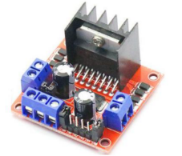IN1, IN2, IN3, IN4 are connected to the control level to control forward and reverse rotation .
State | ENA | ENB | IN1 | IN2 | IN3 | IN4 |
Forward | carSpeed | carSpeed | HIGH | LOW | LOW | HIGH |
Back | carSpeed | carSpeed | LOW | HIGH | HIGH | LOW |
Left | carSpeed | carSpeed | HIGH | LOW | HIGH | LOW |
Right | carSpeed | carSpeed | LOW | HIGH | LOW | HIGH |
stop | 0 | 0 | LOW | LOW | LOW | LOW |
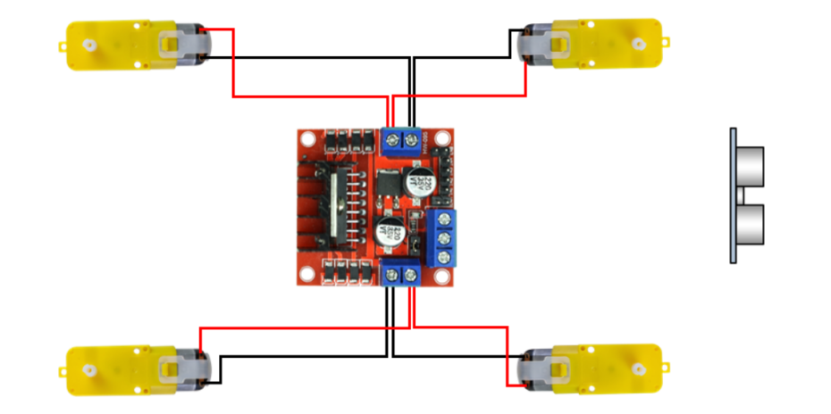
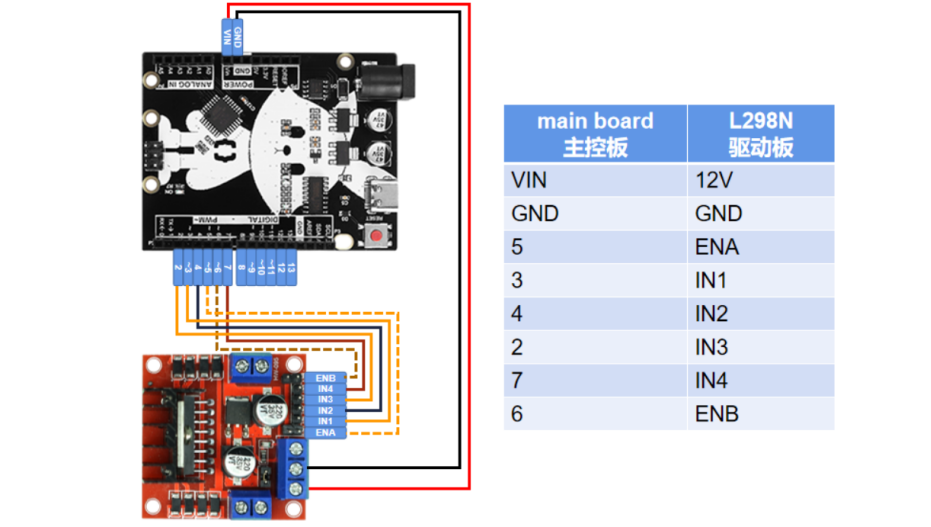
Open the code file (folder path: 2_Arduino_Code\1_Auto_move\1_Auto_move.ino)
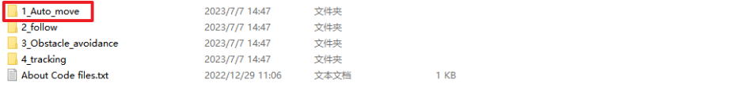
L298N pin definition, PWM is 5/6 pins, IN1~4 are 3/4/2/7 pins
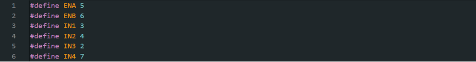
ENA and ENB are high level or 0~255 (the larger the value, the faster the speed), the car can run at different speeds by modifying the value of the variable carSpeed, and the 4 INs can be set to high or low level.
that IN1 and IN4 are at high level when the car is moving forward , and IN2 and IN3 are at low level, which are packaged into the function forward().
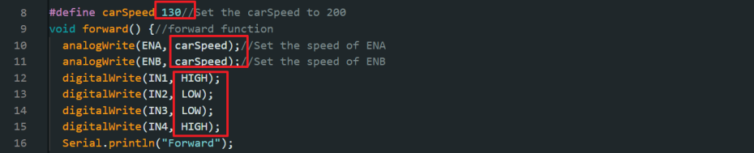
In the same way, the IN level value when the car backs up and turns left and right can be obtained and packaged into a function (the code has been folded).
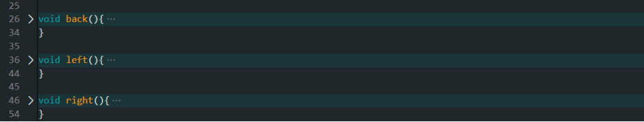
Set the baud rate to 9600 and the pin to output, setup() is only executed once when the program starts.
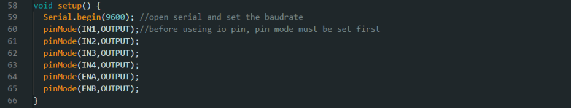
The loop() loop function calls the function that the car moves in all directions, and realizes each interval of 2000 milliseconds through the delay() function.
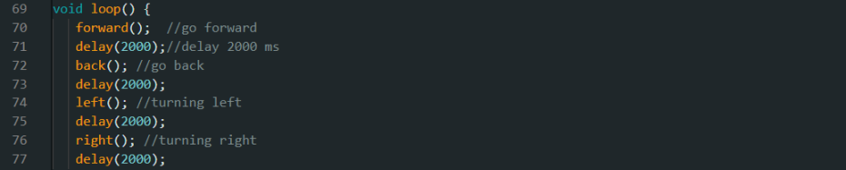
If the whole process can be realized to prove that the motor drive wiring is correct, then the following project tasks can be carried out.
Ultrasonic distance measurement is a very useful and widely used measurement method. This section mainly understands the working principle of the ultrasonic module, masters the connection of the ultrasonic circuit and realizes the following function of the car through programming.
1. Transmitter (trig pin) sends signal: high-frequency sound;
2. When the signal hits an object, it will be reflected;
3. Receiver (echo pin): Receive the signal reflected from it.
There are many methods of ultrasonic distance measurement. The principle of this system in ultrasonic measurement is: to detect the transmission time of the ultrasonic wave from the ultrasonic transmitter through the gas medium to the receiver, and multiply this time by the speed of sound in the air to obtain the sound propagation time distance.
The ultrasonic transmitter emits ultrasonic waves in a certain direction, and the MCU starts timing at the same time. The ultrasonic waves are emitted in the air, and return immediately when encountering obstacles on the way, and the ultrasonic receiver stops timing immediately after receiving the reflected waves. According to the time T recorded by the timer , the distance (S) from the launch point to the obstacle can be calculated.
formula: S = V * T/2
Four factors limit the maximum measurable distance of an ultrasound system: the amplitude of the ultrasound waves, the texture of the reflector, the angle between the reflected and incident sound waves, and the sensitivity of the receiving transducer. The ability of the receiving transducer to receive the sound pulse directly will determine the minimum measurable distance.
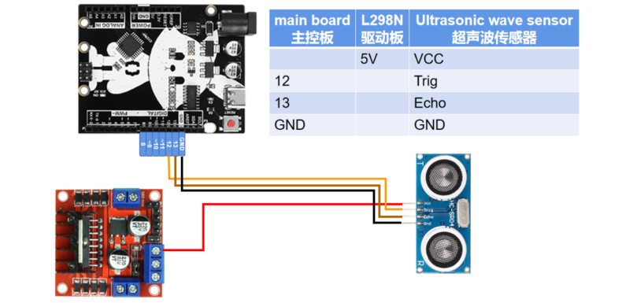
Open the code file (folder path: 2_Arduino_Code\2_follow\2_follow.ino)
On the basis of the content in the previous section, the definitions of the ultrasonic sending (D12) and receiving (D13) pins are added, and the distance variables measured by the ultrasonic wave are distance and cm.
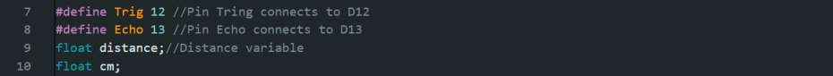
The function GetDistance() used to obtain the ultrasonic detection distance
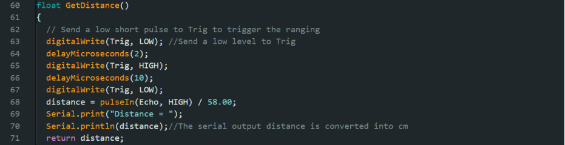
Call the function to obtain the ultrasonic distance in the main function and save it to a variable, and then compare the values.
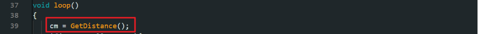
The principle of following the trolley:
When the ultrasonic detection distance of the object in front is between 10 and 25, the car moves forward and follows, otherwise it stops when it is less than 5 or greater than 25, and finally retreats if it is less than 10. There are three states of forward, backward and stop.
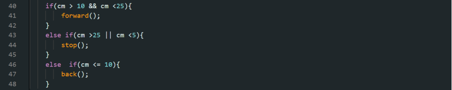
In the previous section, we have understood and learned the relevant knowledge of the ultrasonic module. This section mainly grasps the principle of the obstacle avoidance car , and finally realizes the obstacle avoidance function through programming.
Open the code file (folder path: 2_Arduino_Code\3_Obstacle_avoidance\3_Obstacle_avoidance.ino)
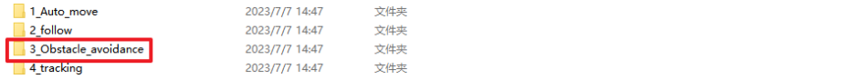
In the previous task code, we have mastered the function GetDistanc( ) to obtain the ultrasonic distance, and saved it in the cm variable. At this time, we need to write the obstacle avoidance program code in the main function.
Principle of obstacle avoidance:
Judging that the distance between the ultrasonic wave and the obstacle ahead is less than 15, the car will back up and turn left, that is, call the back function back( ) and the left turn function left( ), the parameters in the delay function delay(500) can be modified, when 500 is changed to 1000 Time means that the function continues to execute for 1000 milliseconds.
Otherwise, when the distance is greater than 15, execute the forward function forward(), and the car will move forward.
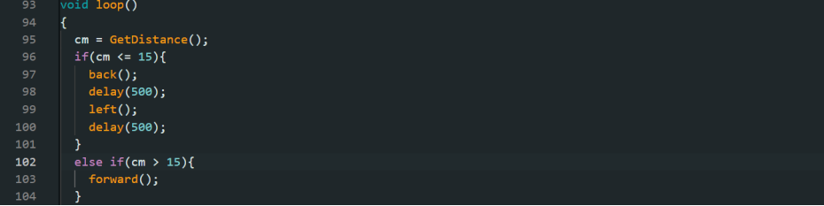
In this section, we will understand the relevant knowledge of the four-way tracking module, master the principle of four-way tracking and learn how to control the car to walk along the runway through programming .
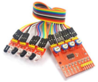
The sensor belongs to infrared reflection detection, that is, the color of the surface of different infrared light objects has different reflection intensity characteristics, and the infrared light is continuously emitted to the ground during the driving process of the car . When the infrared light encounters the white floor, it is diffusely reflected and reflected. It is received by the receiving tube installed in the car ; if it encounters a black line, the infrared light is absorbed, and the receiving tube on the car does not receive the infrared light . Therefore, the position of the black line and the driving route of the car can be determined based on whether the reflected infrared light is received or not.
As shown in the figure, when the power is turned on, the power light D5 lights up. In addition, the four infrared transmitting and receiving tubes connected from top to bottom correspond to the four lights respectively D1/D2/D3/D4. In order to achieve the tracking effect, we also need to The sensitivity of the infrared transmitting and receiving tube in the tracking module is adjusted to an ideal state: when the sensor detects a black line, the corresponding light is off, and other lights are on.
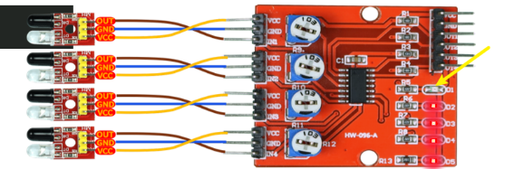
When it is found that the black line is detected but the corresponding light is not off, it is necessary to use a small tool to turn the potentiometer (the position of the yellow circle in the figure below) to slowly adjust to the ideal critical value.
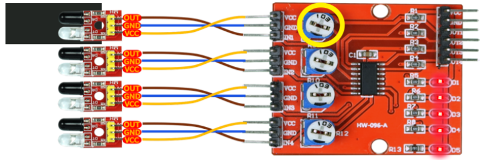
By analyzing the black line detected by the four-way tracking sensor, the trajectory of the car can be determined. When the sensor on the right side detects a black line, the D1/D2 lights are off, which means that the car is moving to the left of the black line, and it needs to turn to the right to adjust. Similarly, when the left sensor detects a black line, it needs to turn left and adjust. Allows the car to go straight when the middle two sensors detect a black line.
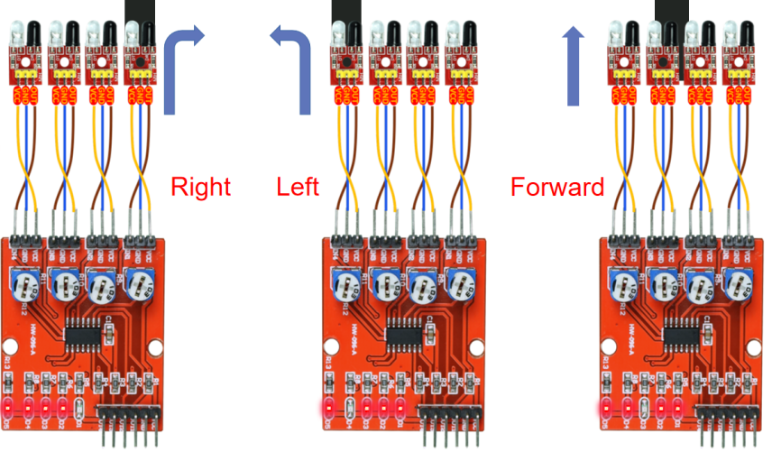
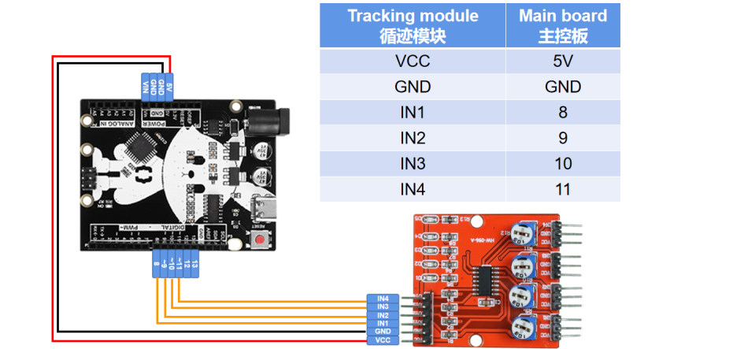
Open the code file (folder path: 2_Arduino_Code\4_tracking\4_tracking.ino)
Define four tracking sensor variables and set pins as inputs
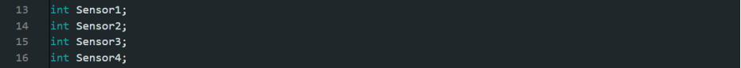
the main function, the obtained detection information of the four-way tracking module is saved to a variable, and the vehicle motion control is performed according to the detection result (high level means black line is detected).
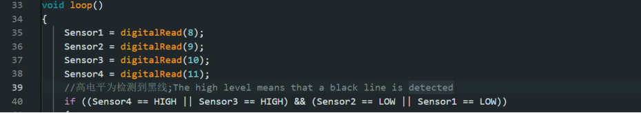
First judge the first possibility. The two sensors on the left detect the black line, which means that the car is to the right. At this time, it needs to be adjusted to the left, so the content of the executive body is to make the car turn left. At the same time, the parameters of ENA and ENB can set the speed when turning left, the maximum is 255, and it can be set according to the actual tracking situation, so as to avoid going out of the route too fast.
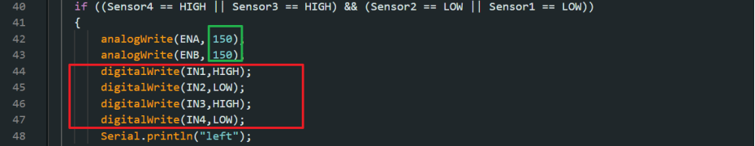
The second possibility is that the two sensors on the right detect a black line, which is the opposite of the previous situation, and you have to turn right at this time.
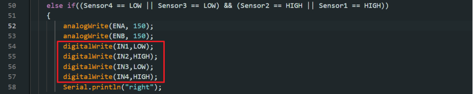
When none of the four sensors detect the black line, or the middle two detect it, go straight.
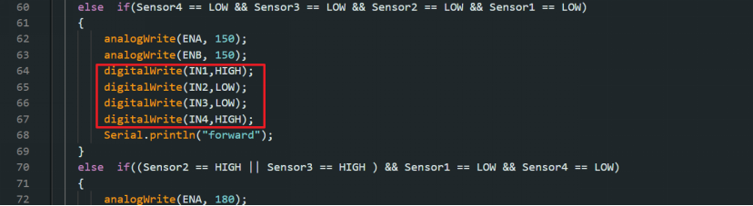
Otherwise, the car will stop in other cases
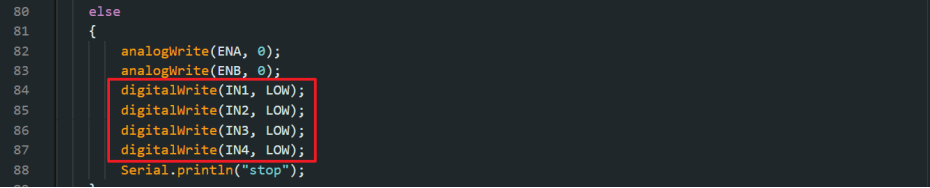